CSS (Cascading Style Sheets) is a textual language for describing how a web page is styled for visual presentation. Web browsers use CSS to determine how a web page is rendered on the screen, printed to paper, or presented via other media. The CSS acronym highlights the two main characteristics of presenting a web page:
A web developer uses CSS to write a list of rules. A CSS rule consists of a selector, an opening curly brace ({), a declaration block, and then a closing curly brace (}).
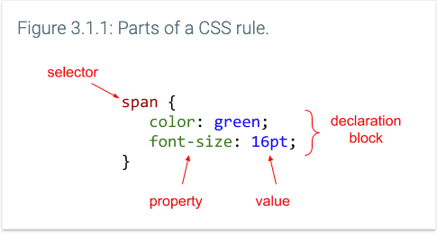
Semicolons are only required to separate rule declarations. A common error is to forget the separating semicolon when adding a new declaration to a declaration block. Good practice is to place each declaration on a separate line and to add a semicolon to the end of each declaration block, even when a semicolon is not required, so that adding the semicolon is not forgotten later when adding more declarations.
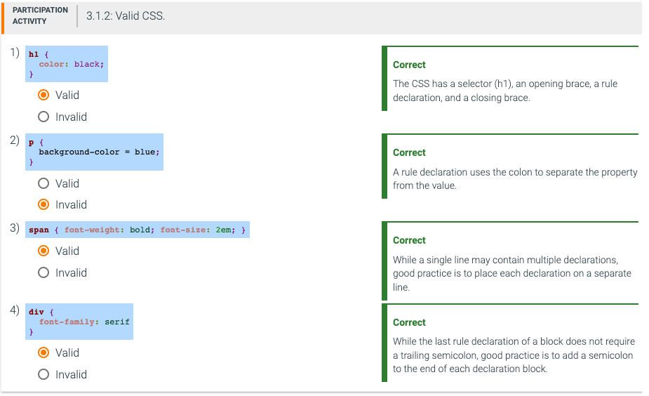
CSS can be applied to HTML in three ways:
The style attribute may be used on any tag. The <style> and <link> tags may be placed anywhere in a web page, but good practice is to place <style> and <link> tags inside the document head (before the <body> tag).
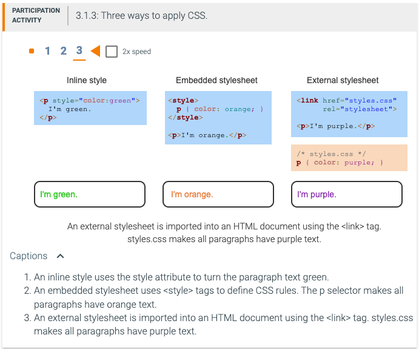
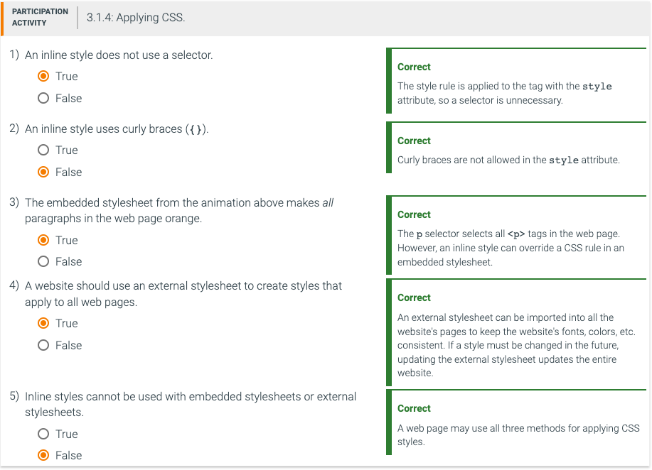
Every browser has a default stylesheet that specifies styling for each HTML element. Ex: The default style declarations for <h1> elements typically specify a bold-weighted font that is twice the normal font size. CSS style declarations override the default style declarations.
The style declarations from a parent element cascade down and are applied to any child elements, a concept called inheritance. Each element inherits the style declarations from the element's parent. That parent in turn inherits style rules from the parent's parent element, and so on up to the top-level <body> element.
When two style declarations with identical properties apply to the same element, a conflict occurs. Two common conflicts include:
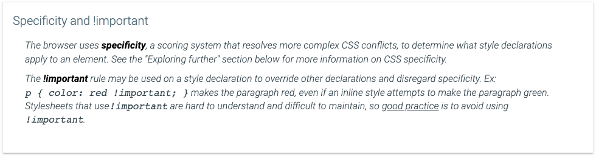
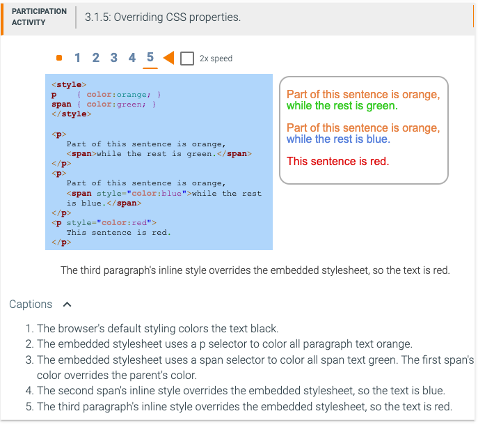
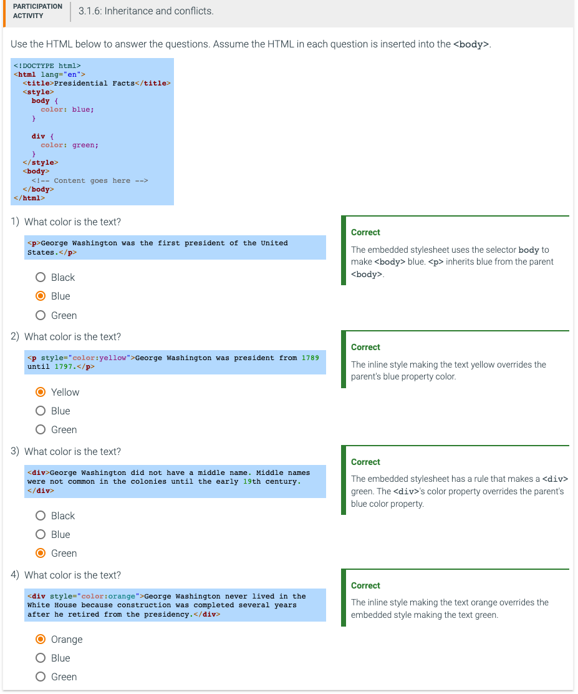
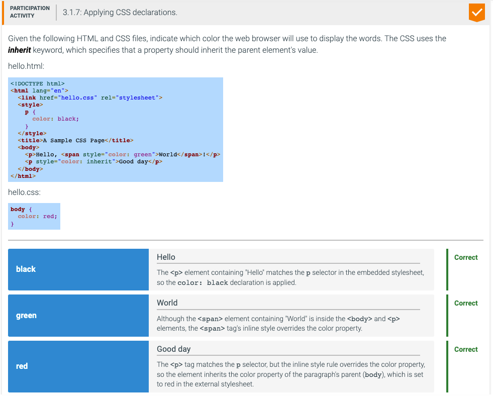
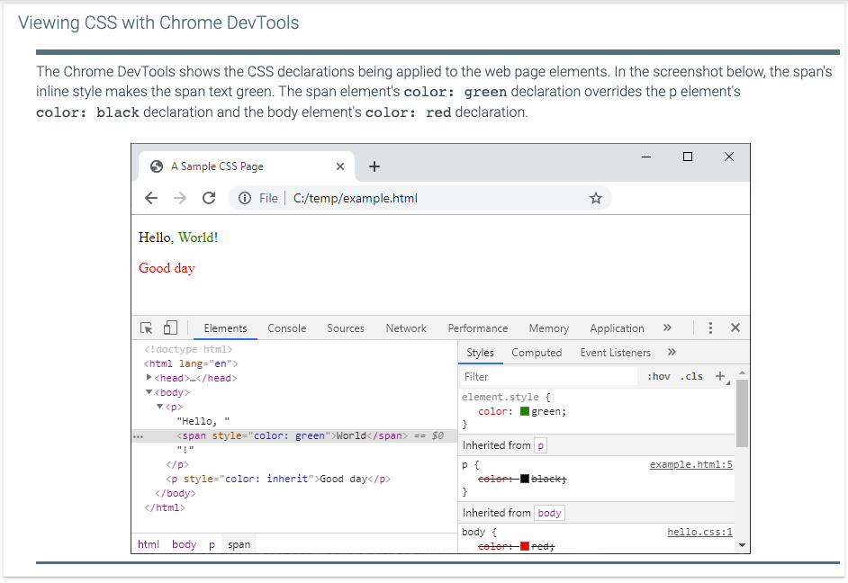
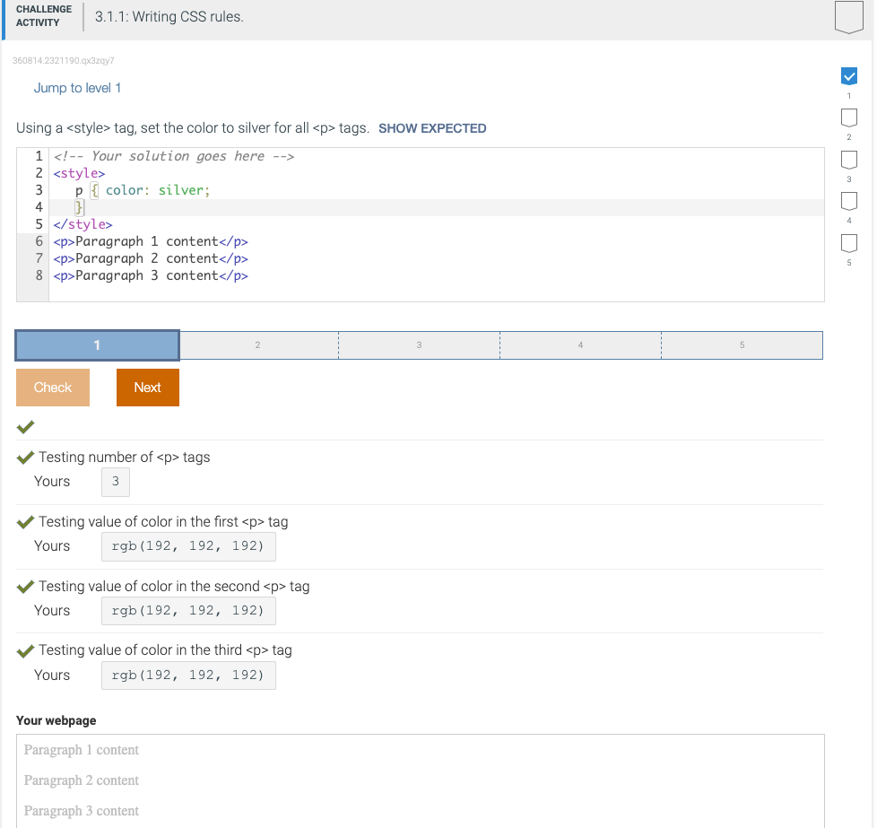
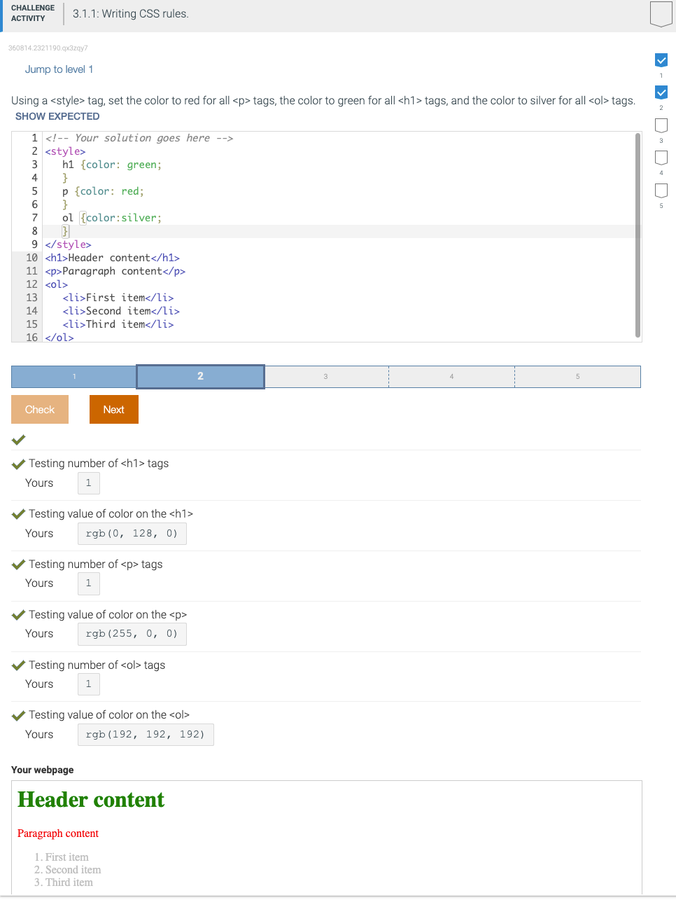
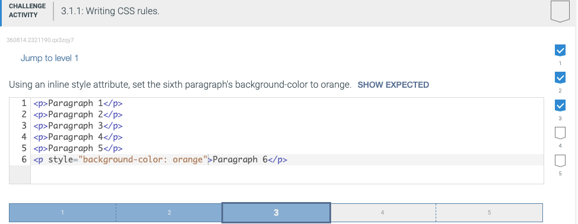
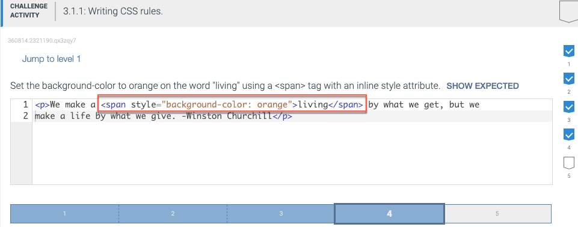
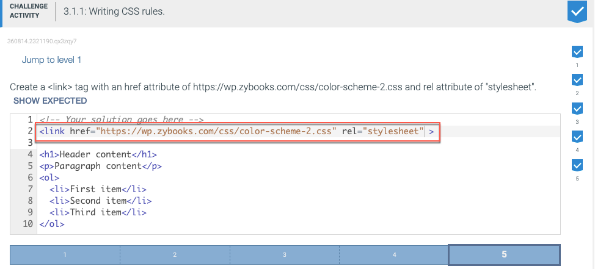